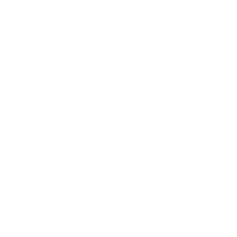

Goodwill+ is a modification of Goodwill

loadstring(game:HttpGet('https://raw.githubusercontent.com/Plusgaming1/Goodwill-/main/GoodwillPlus', true))
Documentation
Games
Features
Decaying Winter:
Menu Customization:
Menu Customization adds new commands, including but not limited to:
:menucolor Red Green Blue:
Configures the menu color
Arguments:
Red 0-255 - The Red RGB value of the menu
Green 0-255 - The Green RGB value of the menu
Blue 0-255 - The Blue RGB value of the menu
:menuposition PositionX PositionY:
Configures the menu position
Arguments:
PositionX 0-100 - The X Position of the menu
PositionY 0-100 - The Y Position of the menu
:menusize SizeX SizeY:
Configues the menu size
Arguments:
SizeX Percentage - The X Size of the menu
SizeX Percentage - The X Size of the menu
New Features:
Infinite Drift (:infdrift, :uninfdrift):
Executing this command while using the drifter and perk and pressing F, will make your perk last forever until your press F again
Third Person (:thirdperson, :unthirdperson)